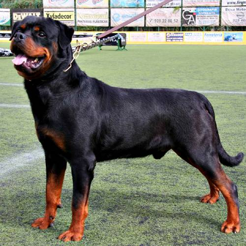
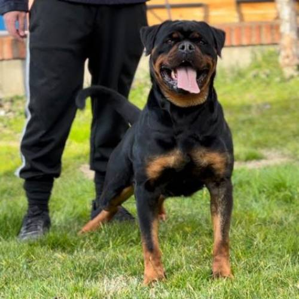

Il Rottweiler è una razza di cane di taglia grande, muscoloso e robusto, noto per la sua forza, resistenza e intelligenza. Ha un pelo corto, di solito nero con macchie marroni o rossastre sul muso, sul petto e sulle zampe. Originariamente utilizzato come cane da lavoro per il bestiame e come cane da guardia, il Rottweiler è leale, protettivo e coraggioso, ma può anche essere calmo e affettuoso con la famiglia se ben addestrato e socializzato.
Il Rottweiler maschio è un cane imponente, con una struttura muscolosa e robusta. Di solito misura tra i 61 e i 69 cm di altezza al garrese e pesa tra i 50 e i 60 kg. Ha un aspetto potente e deciso, con una testa ampia, orecchie a forma di “V” e occhi scuri e attenti. È noto per essere coraggioso, protettivo e leale, richiedendo una buona socializzazione e addestramento fin da cucciolo.
La femmina di Rottweiler è generalmente un po’ più piccola e snella rispetto al maschio, con un’altezza al garrese tra i 56 e i 63 cm e un peso che varia dai 35 ai 48 kg. Mantiene comunque una struttura muscolosa e robusta, con un aspetto elegante ma potente. È intelligente, affettuosa e protettiva, e come il maschio, necessita di una buona educazione e socializzazione per esprimere al meglio il suo carattere equilibrato.